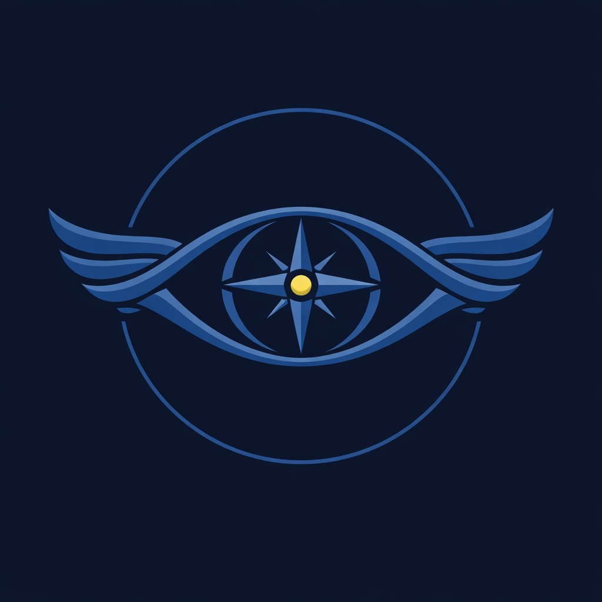

01
Sjekkliste
Sjekklista følger turtypen: snøscooter får sine punkter, bre og topptur får sine. Hopper guiden over noe, aktiveres turen med overstyring, og det synes i kommandosenteret.

Lista under følger spørsmålene vi fikk, i samme rekkefølge. Ni punkter for guiden i felt, ni for kommandosenteret. Skjermbilder og noen setninger per punkt. Ti minutter.
Appen på guidens telefon. Hendelser, skader, deltakere og opptelling registreres på telefonen uten dekning og ligger lagret til nettet er tilbake. Posisjonssporing krever dekning.
Sjekklista følger turtypen: snøscooter får sine punkter, bre og topptur får sine. Hopper guiden over noe, aktiveres turen med overstyring, og det synes i kommandosenteret.

Varselet fra MET ligger rett i sjekken, med skredvurdering på fjellturer. Guiden bekrefter at varselet er lest, og bekreftelsen lagres på turen sammen med tidspunktet for sjekken.

Navn, telefon og nødkontakt per deltaker legges inn når turen opprettes, av guiden eller fra kommandosenteret på forhånd. Lista er den samme som driftssjefen ser i turskuffen.

Nestenulykke, skade eller annen hendelse logges underveis med type, alvorlighet, beskrivelse og tiltak, og vises i kommandosenteret så snart telefonen har dekning.
Guiden tar bilde av skaden rett i hendelsen, for eksempel på kjøretøyet. Stempelet settes i det øyeblikket bildet tas, ikke når det lastes opp.

Under aktiv tur viser appen planlagt rutelengde og tilbakelagt distanse, oppdatert fortløpende fra GPS. Posisjonen deles med kommandosenteret så lenge turen er aktiv.

Ruta tegnes i kommandosenteret på Kartverkets topografiske kart og sendes til guidens telefon, eller guiden legger den inn selv. Farepunkter, oppmøtested og nødutgang ligger i samme kart.

Når turen er avsluttet, lager guiden rapporten med ett trykk: eget rapportnummer, sikkerhetssjekk, vær, deltakere og hendelser. Den deles fra telefonen, og kommandosenteret skriver ut sin egen fra turskuffen.

Guiden skriver tilbakemeldingen i appen. Den går rett inn, ikke via e-post eller et støtteskjema.
Nettleseren på kontoret. Samme data som i appen, sett fra driftssjefens side.
Alle turer i organisasjonen med status, dato og guide. Opprett, rediger, avlys eller godkjenn, og filtrer på aktive, utkast, fullførte og avlyste.

Klikk på en tur i lista eller på kartet, og skuffen åpner: deltakere med telefon og nødkontakt, tildelt utstyr, tellinger underveis med klokkeslett og antall, og om turen ble aktivert med overstyring. Sikkerhetssjekk, hendelser og rapport ligger i samme panel.

Boksen øverst viser MET-varselet for organisasjonens værpunkt, og ett klikk åpner detaljene: vind med kast, nedbør, tåke, bølger og sjøtemperatur fra havvarselet, snø fra NVE. Skredvarselet fra Varsom ligger ved siden av, med alle 23 regioner.

Tilsynsmappa samler en hel periode i én PDF: turer med sikkerhetsstatus, hendelser med kvittering, turer aktivert med overstyring, sertifiseringer med utløpsdato og revisjonslogg. Sesongrapporten gir nøkkeltallene for styremøtet, fordelt per måned og aktivitetstype.

Antall hendelser mot antall turer, nestenulykker skilt ut for seg, alvorlige hendelser uten kvittering og turer aktivert med overstyring. Gjentakelser blir synlige. Tre nestenulykker i løpet av en sesong står som ett tall under samme type, ikke som tre løsrevne hendelser.

Alle guidenes sertifiseringer med utløpsdato på ett sted. Det som utløper innen 30 dager, står i rødt og varsles på forsiden av kommandosenteret.

Organisasjonens beredskapsplan og vaktleder med telefon, ett klikk unna i kommandosenteret. Planen skrives én gang i innstillingene.

Én knapp lager dagens brief: vær, skredvarsel, dagens turer og hvor mange guider som er på tur, som tekst klar til å kopieres inn i morgenmøtet eller meldingen til teamet.

Måneden i rutenett med turene per dag, fargekodet etter status. Klikk en dag for å opprette tur med datoen ferdig utfylt, klikk en tur for å åpne skuffen.

Skjermbildene er tatt i en testorganisasjon, uten reelle personer. Kommandosenteret 12. og 14. oktober 2026, appen sommeren 2026.